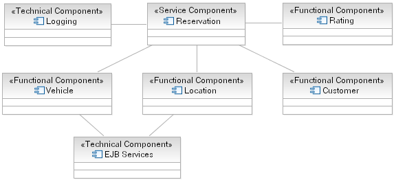
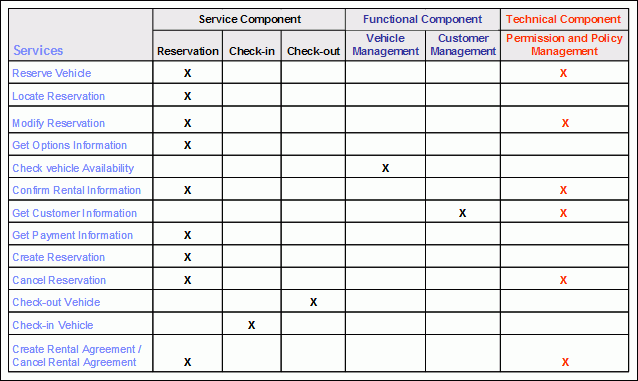

Technical, or Infrastructure, components serve to make available horizontal platform capabilities; that is the
capabilities they provide are not specific to the business domain but cut across business domains. These technical
services are frequently provided by middleware products including operating systems and are used either directly by the
service component or by the functional components on which they rely.
Example
In completing the Rent-a-Car component model (see functional component step above) we include two technical components
into the model, one for the Reservation to log the completion of a reservation request and one to denote that the
Vehicle and Location components rely on EJB Services to persist their business data.

Alternatively you can use a tabular format in expressing the required components and their relationship to the services
previously identified, as shown in the figure below.

|